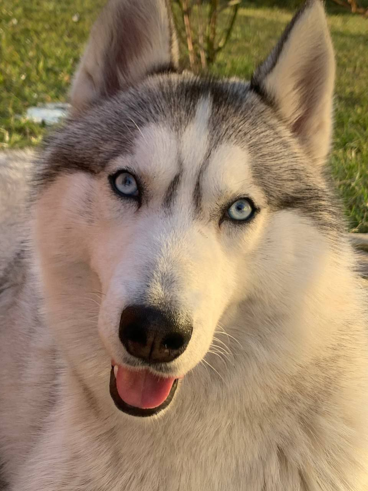

Привіт! Це я)
Мені 19. Навчаюся у Львівській національній академії мистецтв на кафедрі Графічного
дизайну.
В дитинстві ходила в музичну школу і мала вже йти вчитися в цьому напрямку.
Як мене занесло в ГД? Я й сама не знаю. Раптом посеред ночі Іскра, Буря, Емоції.
Я все кидаю і вступаю на графічний дизайн, знаєте, ще жодного разу не пошкодувала про це. Велике здивування для всіх, але таке життя.
Він в мене просто курортник. Обожнює полежати, поспати, поїсти та погуляти. Дуууууже дружелюбний. Незнайома людина зовсім швидко стає другом.

+380964813652
svidrak2003@gmail.com